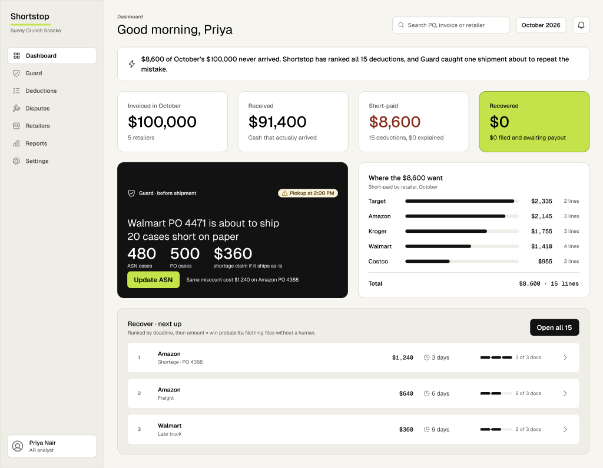
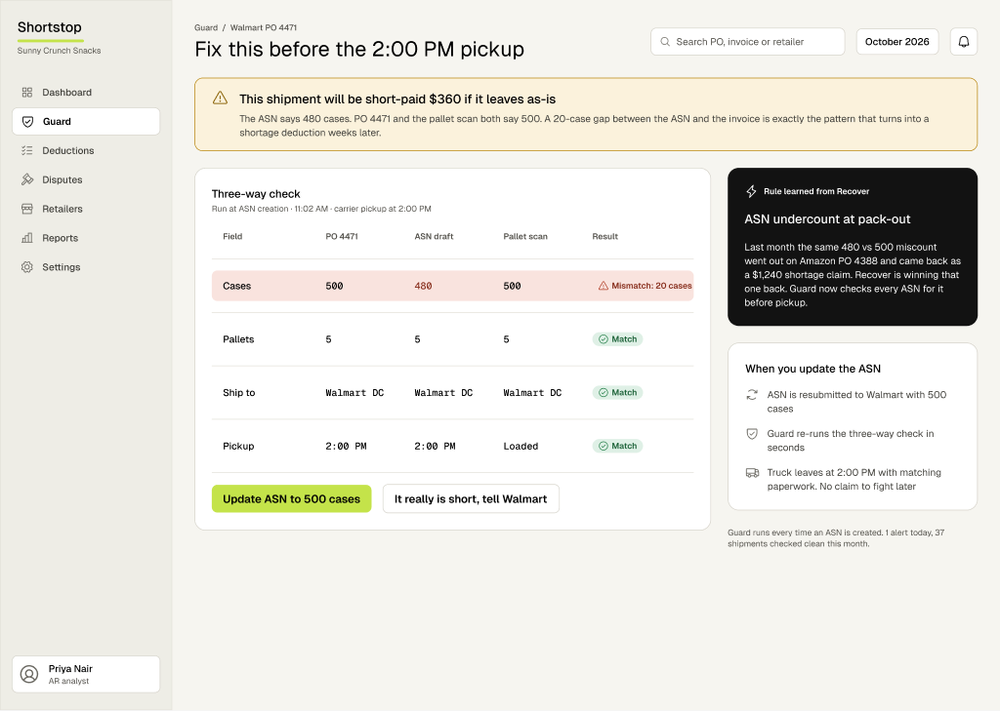
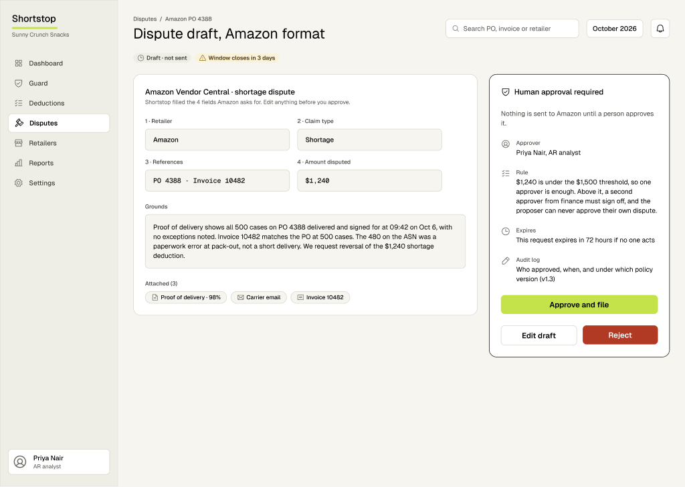

Ramp checks the money going out. Shortstop checks the money coming in. Guard stops retailer deductions before a shipment leaves. Recover wins back the rest after payment, with the proof already attached and a human approving every filing.
CPG brands selling to Walmart, Amazon, Target, Kroger and Costco routinely get paid less than they invoiced: retailers deduct for shortages, late trucks, pricing, promotions and compliance, each in its own portal with its own codes and dispute window. Fighting one means finding a signed proof of delivery (POD) in an inbox, matching it to the PO and invoice and retyping it into a portal, so small deductions get written off (97% of brands auto-write-off small ones, per the Credit Research Foundation’s 2023 survey).
Primary user: the AR or deduction analyst at a $10M–$100M brand juggling 20 portal logins and a spreadsheet. Approver: the ops or finance lead who owns the weekly cash picture and signs off on large disputes. Later: the CFO, who wants one recovered-dollars number that matches the ERP. Not for, yet: brands under ~$10M (too few deductions to pay back) and enterprises over $100M with custom trade-promotion systems.
Checks the PO against the ASN and the pallet scan before the carrier arrives. Example: Walmart PO 4471 has an ASN for 480 cases against a PO for 500. Left alone, that becomes a $360 shortage claim weeks later. One click, Update ASN, before the 2:00 PM pickup and the claim never exists.
Classifies each short-paid line, ranks the queue by deadline × amount × win probability, pulls the POD, carrier email and invoice with a confidence score on every field, and drafts the dispute in the retailer’s own format. A person approves; Shortstop files and tracks it to payout.
The flywheel: every dispute Recover wins teaches Guard a rule. Amazon PO 4388 went out with the same 480-vs-500 ASN miscount and came back as a $1,240 shortage claim. Recover is winning it back, and Guard now checks every ASN for that mistake before pickup.



Build vs buy. We buy the plumbing: ERP connectors (Apideck), POD OCR (Mindee) and money-out data (Ramp). We build what wins disputes: the match engine, the ranking, retailer dispute templates and the approval gate. In the prototype one Approve click changes three things at once through Figma variables: status becomes Filed, the queue drops from 15 to 14, and $1,240 moves to “Filed, pending” until Amazon pays.
MVP boundary. In the mockup: 8 screens on one golden path, 5 retailers named, 2 flows shown in depth, human approval on every filing. In this brief only (v2): auto-filing below a threshold, 20+ portals, promo and trade-spend planning, multi-currency. No live integrations were built for the hackathon; the architecture above is the build plan.
| Phase | Product | Go-to-market | Move on when |
|---|---|---|---|
| 0 · Wedge Now to 3 months | Guard + Recover for Walmart, Amazon, UNFI and KeHE. Human gate on everything. | 10 design partners, $10M–$100M CPG brands. Entry offer: a free audit of 12 months of deductions; the unclaimed money it finds is the pitch. | Partners file through Shortstop every week and recovery rate is measured per retailer. |
| 1 · Repeatable 3 to 12 months | Top-5 retailer dispute templates as product. QuickBooks and NetSuite through Apideck. Batch approval for low-value, high-confidence items. | Publish anonymised recovery-rate benchmarks by retailer as content that finance leads forward internally. | New brands onboard without custom work and Guard catches show up in their monthly numbers. |
| 2 · Scale 12 to 24 months | Retailer coverage from 5 to 20+ through a connector framework, not one-off scrapers. Promo validation, anomaly detection, CFO benchmarking. | Distributor and 3PL partnerships, ERP marketplace listings. Pricing to test: platform fee + % of recovered dollars. | Not before: 20 portals at once, filing without approval, or custom enterprise work. |
$10M revenue × 3–7% deducted (Finortal, 2025) × 40–60% disputable (industry estimate) × 60–80% recovered (our assumption, to validate with design partners). Plus time (hours of assembly become a 30-second review), risk (no missed windows) and one cash number that reconciles to the ERP and Ramp.
Dollars recovered per brand · recovery rate on disputable deductions · missed dispute windows = 0 · time to file · Guard catches per month (deductions that never happened). North star: net recovered dollars per analyst-hour.
Retailer portals have no public APIs, so connectors are brittle. OCR makes mistakes, which is why the human gate and source links exist. Most of the value sits in prevention, so Guard is our differentiator and we lead with it. Dispute windows vary by retailer and must be verified before a real deadline is shown. Recovery rates are assumptions until design partners prove them. Market proof: a published case study reports Miss Jones Baking Co. winning a single $22,943.83 Walmart shortage dispute and finding $120,000 in unclaimed invalid deductions.